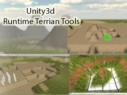
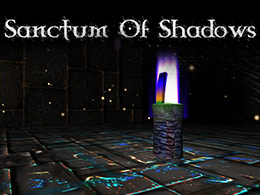
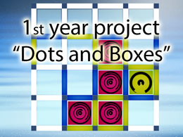
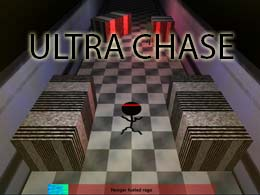
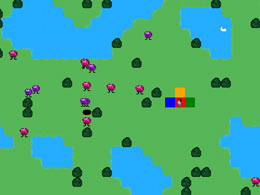
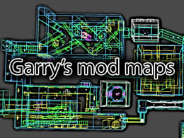
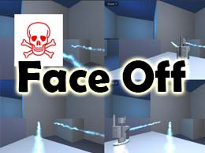
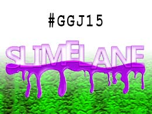
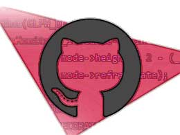

Work

A library to provide helpful methods for modifying terrain objects while the game is running.

A 3D dungeon Crawler, written in c++ using the Irrlicht engine for rendering.

A Javascript web-game created for my HCI module.

A game created in 48 hours for the 28th Ludum Dare competition

A prototype project, testing html5 for games on mobile devices

Multiplayer levels I have created for the sandbox game "Garry's Mod"

My teams entry for the 2014 Global Game Jam

My teams entry for the 2015 Global Game Jam

Content I have authored and worked on for various University Modules.
Key Skills
- C++
- Unity 3D
- Unreal 4
- Javascript & Web Dev
- University Teaching
- Java / C#
- Git / Source Control
- .NET Programming
- Adobe Creative suite
- Academic Level Research
- Playstation 3/4/Vita Dev
- Hardware Architecture
- Data Visualisation
- Code Optimisation, Parallelism
- Public Engagement, Event MGMT
Education
Research Degree, Edinburgh Napier University
PhD researcher & Graduate Teaching Assistant, 2016 - ongoing
Currently working towards a PhD on methods for visualizing and improving the performance of heterogeneous and parallel systems .
BSc (Hons) Games Development, Edinburgh Napier University
BSc (Hons), 2012 - 2016
Graduated with a First Class Degree with HonoursHigh school
Craimgmount High School, 2006 - 2012
SQA advanced highers in : Mathematics, Computing, Physics
SQA highers in : Technological Studies, English
Work
Graduate Teaching Assistant
Edinburgh Napier University, 2016 - ongoing
Along with my research degree, I am also creating and delivering lectures and lab material for Undergrad students. Additionally I share responsibility for overseeing certain students groups, i.e., First year personal development.
Software Engineer
Payfont Limited, February 2016 - July 2016
C++ Software Engineer, developing and improving cryptography algorithms with an emphasis on performance.
Data Visualisation Software Intern
Edinburgh Napier University, May 2015 - December 2016
This started as a software development project to create a framework for visualising data networks that varies over time. As the project progressed it changed to be more research focused: investigating different layout methods, experimentation of visual channel encodings. and running a user study on the effects of combined vs separate data layouts
Games Consoles R&D Intern
Edinburgh Napier University, May 2014 - December 2014
I was tasked with writing and publishing tutorials and applications for other students to use and learn from to develop for the Playstation 3 and Playstation Vita Development Kits. I then delivered a lecture covering console development and how it differs from traditional pc development.
Work experience at Wolfson Microelectronics
October 2009
During which I developed an application to aid the merging of product databases into documentation for clients
Other
Video Game and Creative Technologies; Community and Public Engagement
Regularly organise and help with various events and groups to boost the local Edinburgh Video Games/Software Development, and creative technologies community. Including running exhibitions at the Science festival, maker faire, and independent events such "Games are for Everyone"
Global Game Jam Edinburgh Organiser - January 2016 to present
Organised and ran the Edinburgh chapter of the 48 hour Global Game Jam in 2016/17, this involved ensuring participants were well placed in their teams and had everything they needed to work effectively.
School of Computing representative - 2012 to 2016
Represented BSc Games Development programme and School of Computing. Responsible for listening to issues from other students and ensuring representation at relevant committees. Ensured feedback was relayed back to students on the programme. Helped direct development of programme via meetings with academic staff.
Co-founder & Secretary, Napier Video Gaming Society - 2012 to 2016
Founded and ran the NVGS over the period of my degree. The society was developed to over a hundred members, with maintained relationships and partnerships with external organisations, and hosted Edinburgh wide events and charity fundraisers. Running the society gave me valuable experience in large event management and promotion, budgeting and fundraising, conflict resolution, and extensive interpersonal skills.
Class Demonstrator - January 2016 to September 2016
For the Programming Fundamentals module practical sessions, it was my responsibility to help first year students with any queries and problems. Involving elaborating on concepts covered in the lectures and providing further explanations on the module content.
IT4U Workshops - June 2014 to present
Initially helped organise and run workshops held for high school students, introducing them to the fundamentals of games development. I have since produced content for running my own series of workshops, for delivery in May 2016.
BCS App-a-thon Guinness World Record - Witness & Technical Advisor - June 2015
Involved in the Edinburgh group of a nation wide attempt to break the Guinness World Record for the largest number of people simultaneously learning to code an Android app. My role before and after the record attempt to help participants and provide advice, during the record attempt period I was an official witness to verify the legitimacy of the event.
Guest Lecturer - Heriot-Watt University - April 2015
Hired to deliver a lecture to final year undergraduate students at Heriot-Watt University. The lecture content was an overview of the games industry: what tools and technologies are used, the development life-cycle, and the roles of software developers in games projects.
Contact Me
You can drop me an email at:sam@samserrels.com
I'm also available on: